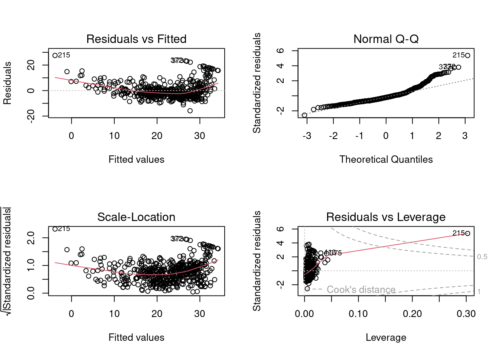

library(ISLR2)
library(tidyverse)Identifying outliers in linear model
DS202 Blog Post
week03
linear regression
outliers
TLDR
Here you will find R code to single out points with high “studentized” residuals
During Week 03 lab, we looked at diagnostic plots we can generate in R to obtain insights about the fit of a linear model.
Import required libraries
Fit a linear model then produce diagnostic plots
lm.fit <- lm(medv ~ lstat * age , data = ISLR2::Boston)
par(mfrow=c(2,2))
plot(lm.fit)
A frequent question we got in the labs was about the first of these plots, “Residuals vs Fitted”.
Residual vs Fitted plot
Ideally, the residual plot, also called the null residual plot, should show a random scatter of points centered around 0 and forming an approximately constant width band.
Code
# Add dots
plot(predict(lm.fit), rstudent(lm.fit),
xlab="Fitted values",
ylab="Residuals",
main="Residuals vs Fitted")
# Add lines
abline(h = 3, lwd = 5,col = 'red')
abline(h = 0, lwd = 5,col = 'yellow')Code
plot_df <- data.frame(fitted_vals=predict(lm.fit),
residuals=rstudent(lm.fit))
g <- ggplot(plot_df, aes(x=fitted_vals, y=residuals)) +
# Add dots
geom_point(alpha=0.4, size=3.5) +
xlab("Fitted values") +
ylab("Residuals") +
ggtitle("Residuals vs Fitted") +
# Add lines
geom_hline(yintercept=0, size=1.5, color='yellow') +
geom_hline(yintercept=3, size=1.5, color='red') +
# Customising the plot +
theme_bw()Warning: Using `size` aesthetic for lines was deprecated in ggplot2 3.4.0.
ℹ Please use `linewidth` instead.Code
g
Selecting outliers
How do you identify the data points that have a high value of residuals (potential outliers)?
To produce this plot, we used the function rstudent() to calculate the so-called “studentized” residuals. This function returns a vector with the same length as the number of data points:
studentized_residuals <- rstudent(lm.fit)
length(studentized_residuals)[1] 506nrow(Boston)[1] 506We can use this information to filter and select those data points that produced a studentized-residual above 3:
df_potential_outliers <- Boston[studentized_residuals > 3, ]
df_potential_outliers crim zn indus chas nox rm age dis rad tax ptratio lstat medv
187 0.05602 0 2.46 0 0.488 7.831 53.6 3.1992 3 193 17.8 4.45 50.0
215 0.28955 0 10.59 0 0.489 5.412 9.8 3.5875 4 277 18.6 29.55 23.7
226 0.52693 0 6.20 0 0.504 8.725 83.0 2.8944 8 307 17.4 4.63 50.0
258 0.61154 20 3.97 0 0.647 8.704 86.9 1.8010 5 264 13.0 5.12 50.0
263 0.52014 20 3.97 0 0.647 8.398 91.5 2.2885 5 264 13.0 5.91 48.8
268 0.57834 20 3.97 0 0.575 8.297 67.0 2.4216 5 264 13.0 7.44 50.0
372 9.23230 0 18.10 0 0.631 6.216 100.0 1.1691 24 666 20.2 9.53 50.0
373 8.26725 0 18.10 1 0.668 5.875 89.6 1.1296 24 666 20.2 8.88 50.0Data frame df_potential_outliers above contain all potential outliers according to this criteria. In a real-life setting, you would check the values of these data points in comparison with the rest of the dataset to understand what makes them different.
What to do next?
If the process that generated the dataset is indeed linear, it is possible that these are “true” outliers, rare cases that deviate from the norm. But often, this indicates that a linear model is not able to capture all the nuances present in the data. Maybe the data generating procedure is nonlinear? Or maybe it depends on other features that are not present in your dataset?
As for your next actions, it all depends on what you plan to do with this model or how much risk you can take by predicting data similar to these edge cases. If you do not want or cannot afford to ignore these errors, you can try to collect more data, fit more complex algorithms, or talk to domain experts to try to understand these cases a bit more.